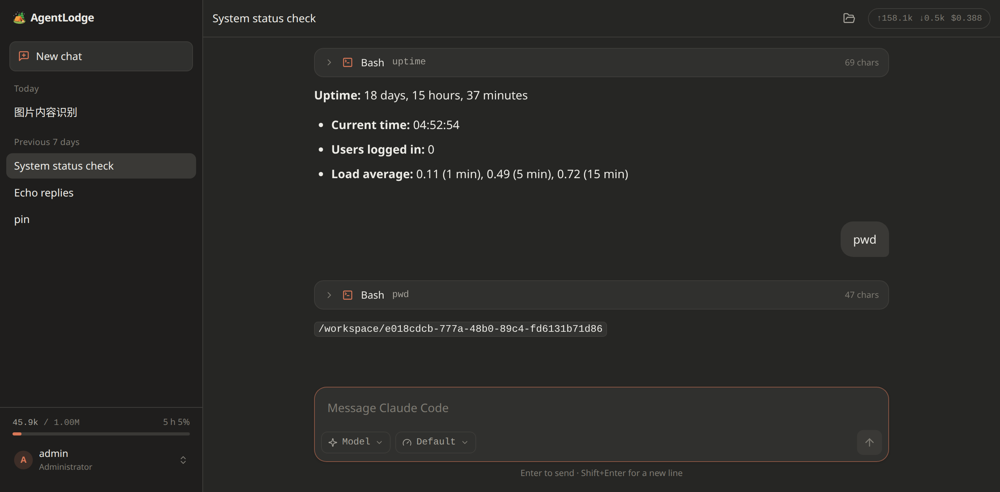
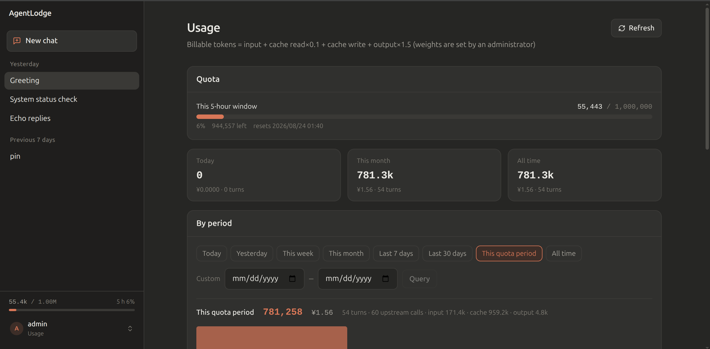
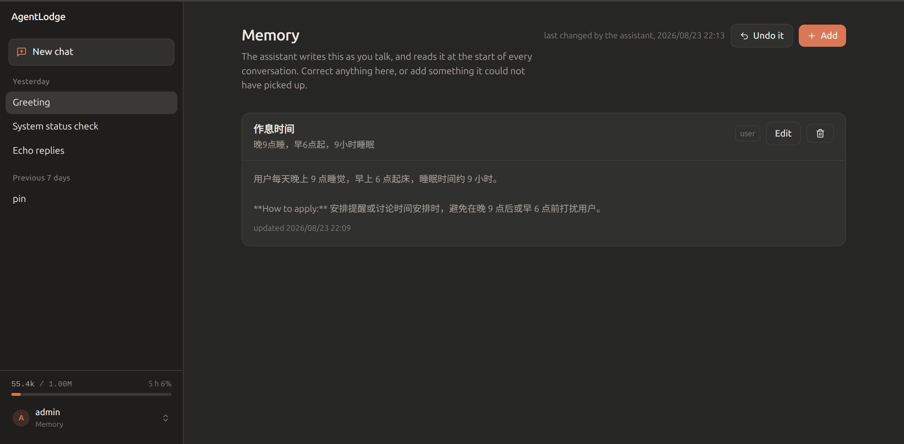
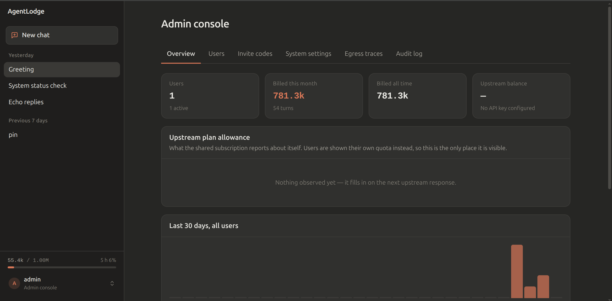

每个用户有自己的沙箱 agent。你只管一把上游 key，一把都不用发出去。 Every user gets their own sandboxed agent. You hold one upstream key and hand out none.
agent 手上是绑定 (user, conversation, turn) 的 20 分钟票据。计量绕不过去，容器被拿下也偷不到东西。
Agents carry a 20-minute ticket bound to (user, conversation, turn), so metering cannot be bypassed and a compromised container leaks nothing worth having.
不只是门口拦一下。agent 循环跑飞了是当场停，不是事后记账。 Not just at the door — an agent loop that runs away is stopped while it runs, not billed for afterwards.
经审计代理落盘，完整 prompt，留多久按你的合规要求。 Through an audit proxy, with the full prompt, for as long as your compliance rules say.
非 root、CapDrop ALL、内存 / CPU / PID 限额，只挂载自己的工作目录。 Non-root, all capabilities dropped, memory / CPU / PID limits, and only that user's workspace mounted.
容器里没有 key，只有一张票据；换 key 的那一步只发生在网关进程里。 There is no key in the container, only a ticket. The swap happens inside the gateway process.
浏览器browser ─→ app ─→ agent 容器container ─→ gateway ─→ 上游upstream claude / codex │ 只有 20 分钟票据holds a ticket only │ 在这里换成真 keythe real key goes on here │ 计量 · 配额 · 审计metering · quota · audit
高仿 Claude 的对话界面，加上用量、记忆和后台。 A close copy of the Claude interface, plus usage, memory and a console.




claudeYour own CLI: one command to install, then run claude as usual不用 clone 仓库，两个文件就够。 No clone needed — two files is the whole of it.
# 拿到 compose 和环境变量样例fetch the compose file and the example environment curl -fsSLO https://raw.githubusercontent.com/wrfly/AgentLodge/master/docker/compose.release.yml curl -fsSL https://raw.githubusercontent.com/wrfly/AgentLodge/master/docker/env.release.example -o .env # 至少填 JWT_SECRET、AUDIT_ADMIN_TOKEN、DATA_DIR、TZat minimum JWT_SECRET, AUDIT_ADMIN_TOKEN, DATA_DIR, TZ $EDITOR .env docker compose -f compose.release.yml up -d docker pull docker.io/wrfly/agentlodge-agent:latest
第一个用上启动时打印的邀请码的账号，就是管理员。 The console prints a bootstrap invite code — the first account to use it becomes the administrator.